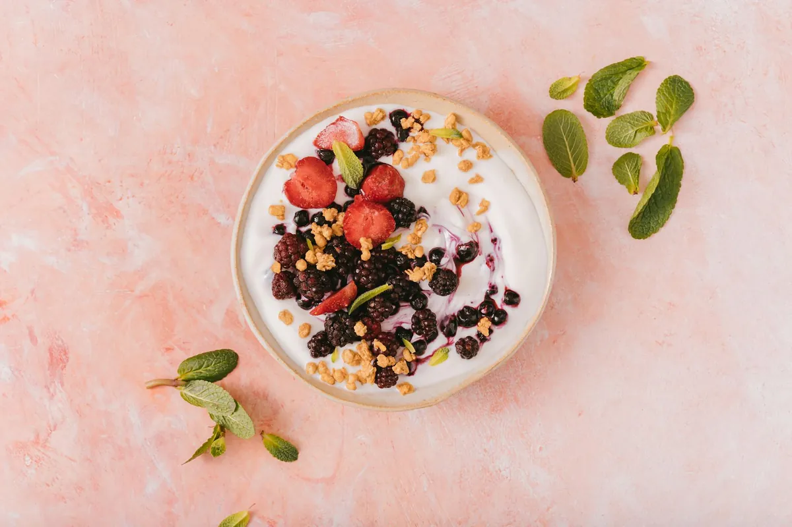

Heal From Within: The Power of Antioxidant-Rich Foods

Key takeaways
- Right now, grab a handful of berries or a small portion of nuts.
- That’s your first step towards fueling your body with powerful antioxidants and healthy fats.
- Track what feels sustainable and adjust gradually.
Think of antioxidants as your body's tiny, tireless defenders. They fight off harmful molecules called free radicals, which can cause damage and inflammation. When I learned this, it clicked. **Inflammation was likely the culprit behind my persistent fatigue and discomfort.** By choosing foods packed with these defenders, I started to feel my body healing itself from the inside out.
And let's not forget healthy fats! For years, we were told fats were the enemy, right? I fell for that too. But my journey taught me that **healthy fats are crucial for everything from brain function to reducing inflammation.** They help your body absorb certain vitamins and keep your cells healthy. It’s all about choosing the *right* kinds of fats.
So, what are these healing foods? Think vibrant colors and delicious flavors! Berries, leafy greens, nuts, seeds, and fatty fish are my go-to's. They’re not just good for you; they’re incredibly versatile and make meals exciting. I found that incorporating these foods didn't feel like a chore; it felt like I was finally giving my body the tools it needed to thrive.
The 2-Minute Win
Right now, grab a handful of berries or a small portion of nuts. That’s your first step towards fueling your body with powerful antioxidants and healthy fats. Keep a small container of almonds or walnuts at your desk!
It’s about making small, consistent changes. I used to think I had to overhaul my entire diet overnight, which was totally overwhelming. But focusing on adding one or two antioxidant-rich foods each day made a huge difference. This approach helped me build sustainable healthy habits that actually stuck.
Pro-Tip: Don't be afraid of healthy fats from sources like avocados and olive oil. They are incredibly satiating and help your body absorb fat-soluble vitamins, which are vital for overall health.
Making these dietary shifts has not only helped my physical well-being but also my mental clarity. When my body feels better, my mind feels clearer. It’s a wonderful cycle. If you're looking for a similar wellness insight, focusing on nutrient-dense foods is a great place to start.
Here’s a simple checklist to help you get started on your healing journey:
My 'Heal From Within' Checklist:
- Add one serving of berries to your breakfast.
- Swap your usual snack for a handful of nuts or seeds.
- Include a source of healthy fat (like avocado or olive oil) in at least one meal.
- Choose colorful vegetables for every dinner.
- Drink a glass of water infused with lemon or cucumber.
Remember, this journey is about progress, not perfection. **Every healthy choice is a win for your body.** If you're looking for more ways to support your health, exploring explore more anti-inflammatory guides can offer additional strategies.
For more practical advice, check out this related healthy tip or this another practical guide. Educational only — not medical advice.
More in anti-inflammatory
 anti-inflammatory
anti-inflammatoryPractical Foods to Repair Your Body Now: Heal with Antioxidants & Healthy Fats
Discover anti-inflammatory foods packed with antioxidants and healthy fats to help your body heal. Learn practical tips
Read article → anti-inflammatory
anti-inflammatoryUnlock Your Mobility: Simple Diet & Movement Tips for Joint Comfort
Feeling stiff? Discover practical diet and exercise tips to improve joint health, boost mobility, and find everyday comf
Read article →Related posts
anti-inflammatoryPractical Foods to Repair Your Body Now: Heal with Antioxidants & Healthy Fats
Discover anti-inflammatory foods packed with antioxidants and healthy fats to help your body heal. Learn practical tips
Read article →anti-inflammatoryUnlock Your Mobility: Simple Diet & Movement Tips for Joint Comfort
Feeling stiff? Discover practical diet and exercise tips to improve joint health, boost mobility, and find everyday comf
Read article → anti-inflammatory
anti-inflammatoryWhat Foods Lower Inflammation Naturally?
Discover everyday foods that can help reduce inflammation in your body. Learn simple dietary changes for a healthier you
Read article →